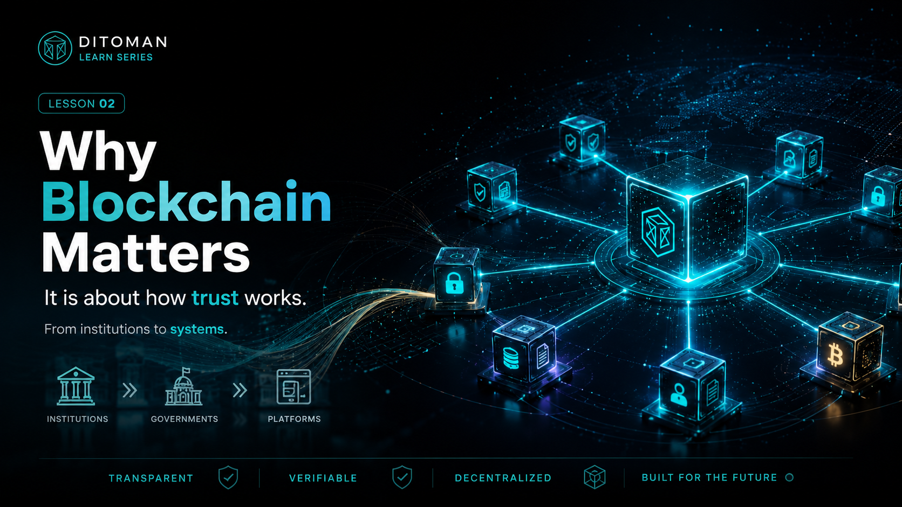

Why Blockchain Matters
Blockchain matters because it changes how trust works. It moves trust from institutions and platforms toward transparent, verifiable, and decentralized systems.
Lesson Content
Read the lesson in English or Persian. This lesson explains why blockchain is not only about crypto, but about trust, verification, and how future systems are built.
Most people think blockchain is about crypto.
It is not.
Blockchain is about how trust works.
Today, people rely on institutions to verify, control, protect, and give access. Banks hold and manage money. Governments create rules and enforce them. Platforms store data, control accounts, and decide who can enter or leave digital spaces.
These systems are important, but they also create dependence. When trust is placed only in one institution, one company, or one platform, users must accept that the system will act correctly, remain honest, and protect their access.
Blockchain changes this structure.
It does not remove trust from the world. It changes where trust is placed. Instead of relying only on people or institutions, blockchain allows trust to move toward transparent systems, shared records, and verifiable rules.
This is why blockchain matters.
It can make information easier to verify, ownership easier to prove, transactions easier to track, and systems harder to manipulate without visibility.
This shift is bigger than money.
It affects infrastructure, data, access, decision making, digital identity, finance, and the way people interact with systems.
Understanding blockchain will not be optional.
It will be essential.
بیشتر مردم فکر میکنند بلاکچین فقط درباره کریپتو و ارز دیجیتال است.
اما اینطور نیست.
بلاکچین درباره نحوه کار کردن اعتماد است.
امروز ما برای تأیید، کنترل، حفاظت و دسترسی به نهادها اعتماد میکنیم. بانکها پول ما را نگه میدارند و مدیریت میکنند. دولتها قانون میسازند و اجرا میکنند. پلتفرمها دادههای ما را ذخیره میکنند، حسابها را کنترل میکنند، و تصمیم میگیرند چه کسی اجازه دسترسی داشته باشد.
این سیستمها مهم هستند، اما وابستگی هم ایجاد میکنند. وقتی اعتماد فقط در اختیار یک نهاد، یک شرکت یا یک پلتفرم باشد، کاربر باید قبول کند که آن سیستم درست عمل میکند، شفاف میماند، و دسترسی او را حفظ میکند.
بلاکچین این ساختار را تغییر میدهد.
بلاکچین اعتماد را از جهان حذف نمیکند. بلکه جای اعتماد را تغییر میدهد. به جای اینکه فقط به افراد یا نهادها اعتماد کنیم، بلاکچین اجازه میدهد اعتماد به سمت سیستمهای شفاف، سوابق مشترک، و قوانین قابل بررسی حرکت کند.
اهمیت بلاکچین همینجاست.
بلاکچین میتواند بررسی اطلاعات را سادهتر کند، اثبات مالکیت را روشنتر کند، مسیر تراکنشها را قابل مشاهدهتر کند، و دستکاری سیستمها را بدون دیده شدن سختتر کند.
این تغییر فقط درباره پول نیست.
این تغییر روی زیرساخت، داده، دسترسی، تصمیمگیری، هویت دیجیتال، مالی، و نحوه تعامل مردم با سیستمها اثر میگذارد.
فهم بلاکچین در آینده انتخابی نخواهد بود.
ضروری خواهد شد.
Key Concepts
- Trust
- Institutions
- Verification
- Access
- Control
- Transparency
- Protocol
- Systems
- Data
- Decision making
Learning Objectives
- Understand why blockchain is bigger than crypto.
- Explain how people currently trust institutions and platforms.
- Understand how blockchain changes where trust is placed.
- Recognize why transparency and verification matter.
- Connect blockchain to infrastructure, data, and future systems.
Future Quiz Bank
These questions are prepared for the future Ditoman quiz and participation system. They may later support learning scores, reputation layers, and possible TMN reward eligibility.
Question 1
What is the main idea of this lesson?
A. Blockchain is only about trading coins
B. Blockchain changes how trust works
C. Blockchain removes the need for all systems
D. Blockchain is only useful for banks
Correct answer: B
Question 2
Which institutions do people often rely on today?
A. Banks
B. Governments
C. Platforms
D. None of the above
Correct answers: A, B, C
Question 3
What does blockchain move trust toward?
A. Hidden systems
B. A single company
C. Transparent and verifiable systems
D. Private records only
Correct answer: C
Question 4
True or False: Blockchain is important only because it creates digital money.
Correct answer: False
Question 5
Which areas can blockchain affect?
A. Infrastructure
B. Data
C. Decision making
D. Digital identity
Correct answers: A, B, C, D
Instagram Summary
This lesson was first introduced on Ditoman Instagram as part of the Education Series. The Instagram version explains how blockchain changes trust, while this page provides the full learning version.
خلاصه تصویری این درس ابتدا در اینستاگرام Ditoman منتشر شد. نسخه اینستاگرام توضیح میدهد که بلاکچین چگونه مفهوم اعتماد را تغییر میدهد، اما این صفحه نسخه کامل آموزشی آن است.